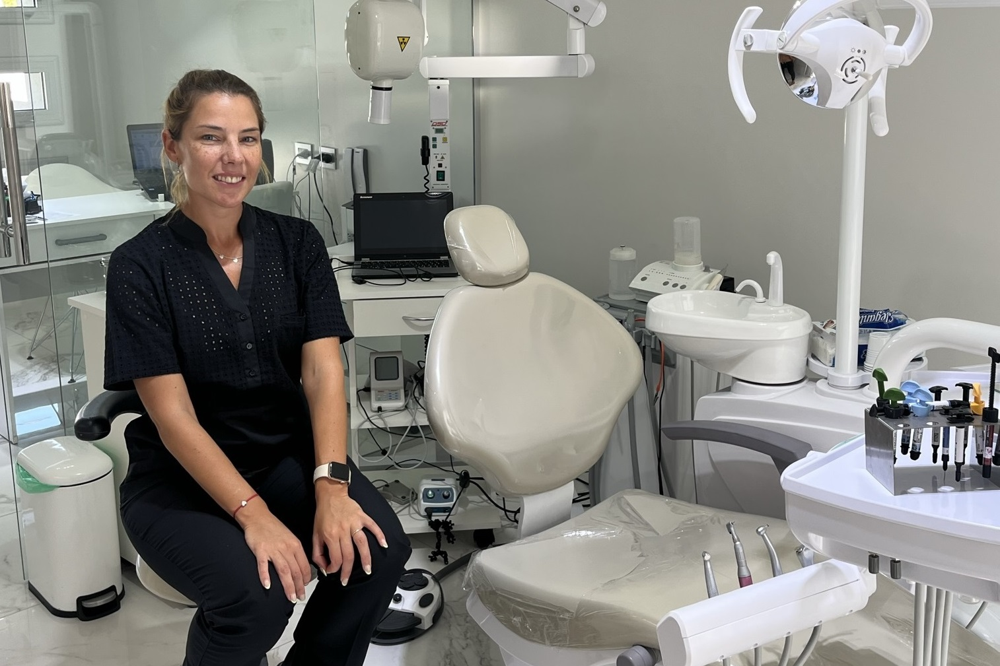

Soy Débora Márquez, nací en Isla Verde (CBA.). Estudié Odontología en la Universidad Nacional de Córdoba, graduándome en diciembre de 2016. A comienzos de 2017 comencé a trabajar de manera independiente en la localidad de Monte Maíz, donde luego me radiqué definitivamente. A la vez, mientras hacía mis primeros pasos en la odontología general, me especialice en Endodoncia y en Ortodoncia, logrando así dar un servicio mas completo a la comunidad. Soy una apasionada de mi profesión y mi mayor satisfacción es que mis pacientes salgan del consultorio con una sonrisa de alegría.
Mi consultorio está ubicado en Monte Maíz (CBA.) en la calle San Luis 1641. Fue inaugurado en noviembre de 2022, instalándome en mi lugar definitivo, luego de dos ubicaciones anteriores. El mismo está equipado con aparatos modernos y de última tecnología para poder brindar un servicio integral, ágil y de calidad. Además, se encuentra ambientado de manera cálida, para que mis pacientes se sientan cómodos y relajados, haciendo que su paso por mi consultorio sea un momento placentero.